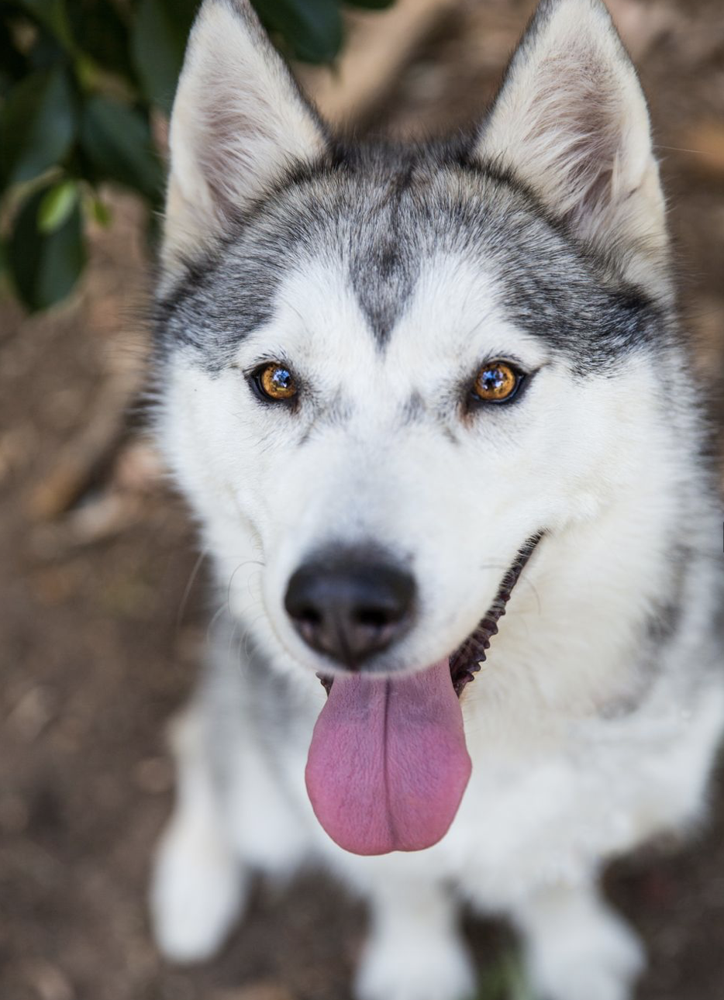

|  |
Name: Colt Age: 12 years Gender: Male Breed: Siberian Husky Status: active |
Colt's basic obedience is excellent. He is able to focus on his owner in and out of the house. He is great at loose-leash walking but is currently working through some leash reactivity. Colt is not too food motivated. Colt does not show interest in chew toys but will interact with plush toys in play sessions.
| Diet: | Very few teeth, kibble must be ground in a food processor then combined with water to form a paste, treats must be soft and tearable. Grain intolerant, must be fed a grain-free diet. Currently on Blue Buffalo Wilderness Duck Formula kibble and assorted Taste of the Wild wet food. Fed 1/3 cup of kibble and 2 spoonfuls of wet food, twice a day. |
| Medical: | Grain intolerant. On K9 Advantix Medium Dog for flea and tick prevention. |
| Other: | Fear of water. |
| Owner: | Samantha Lin |
| 650-328-9334 | |
| slin9334@gmail.com | |
| Vet: | Adobe Animal Hospital |
| 650-222-7688 |